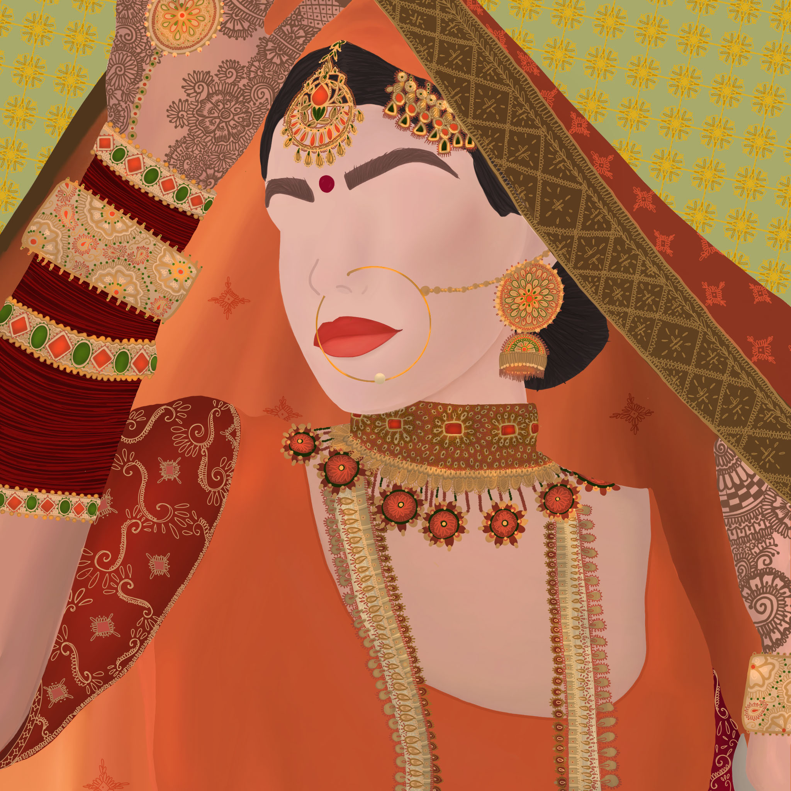
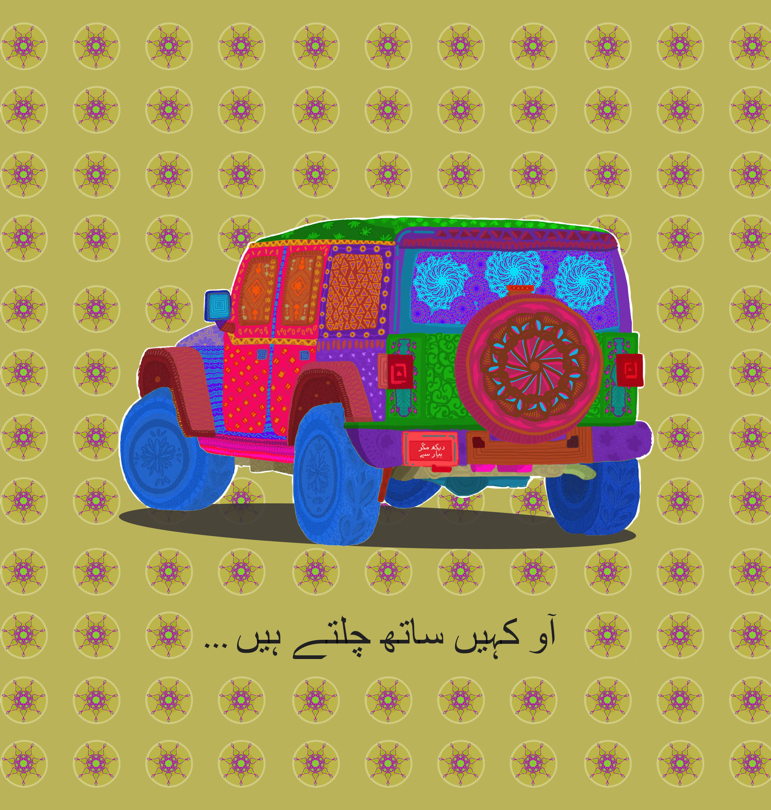
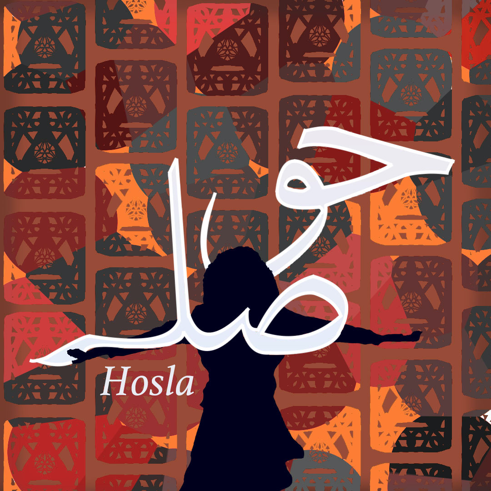
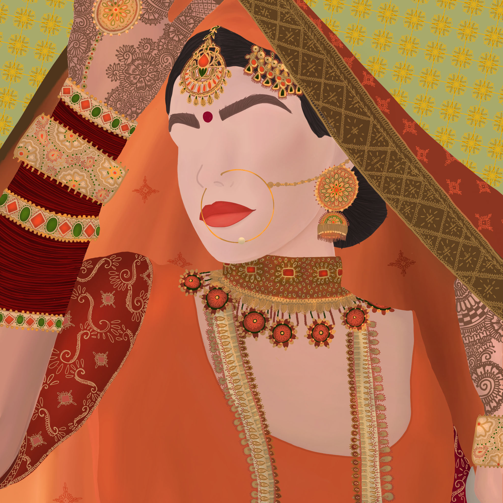
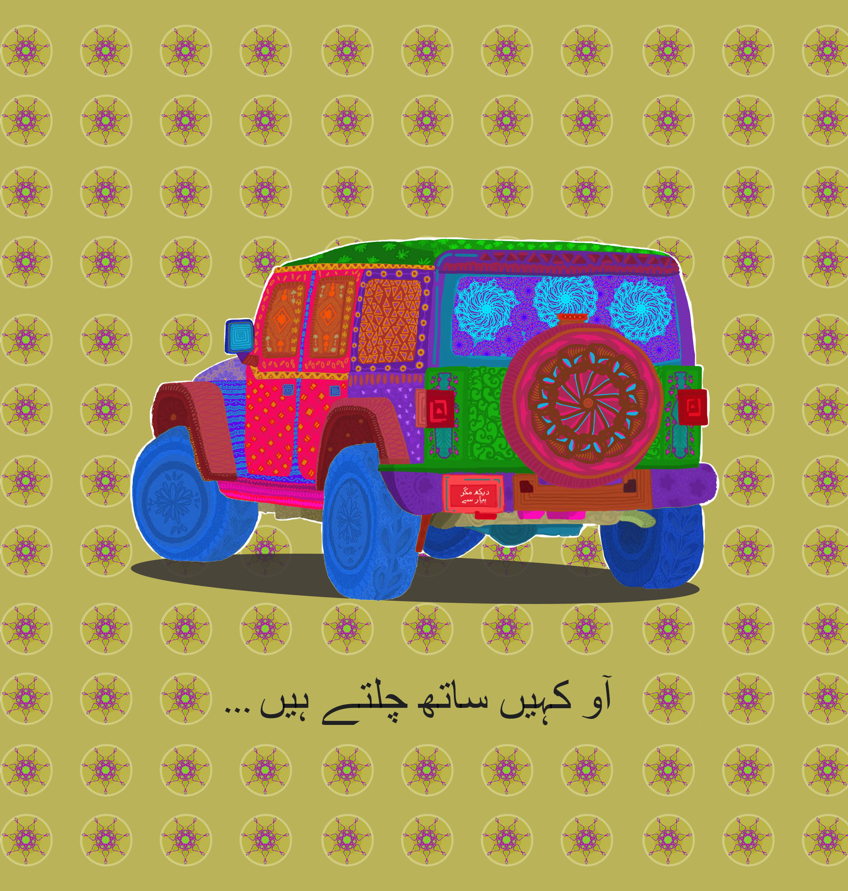
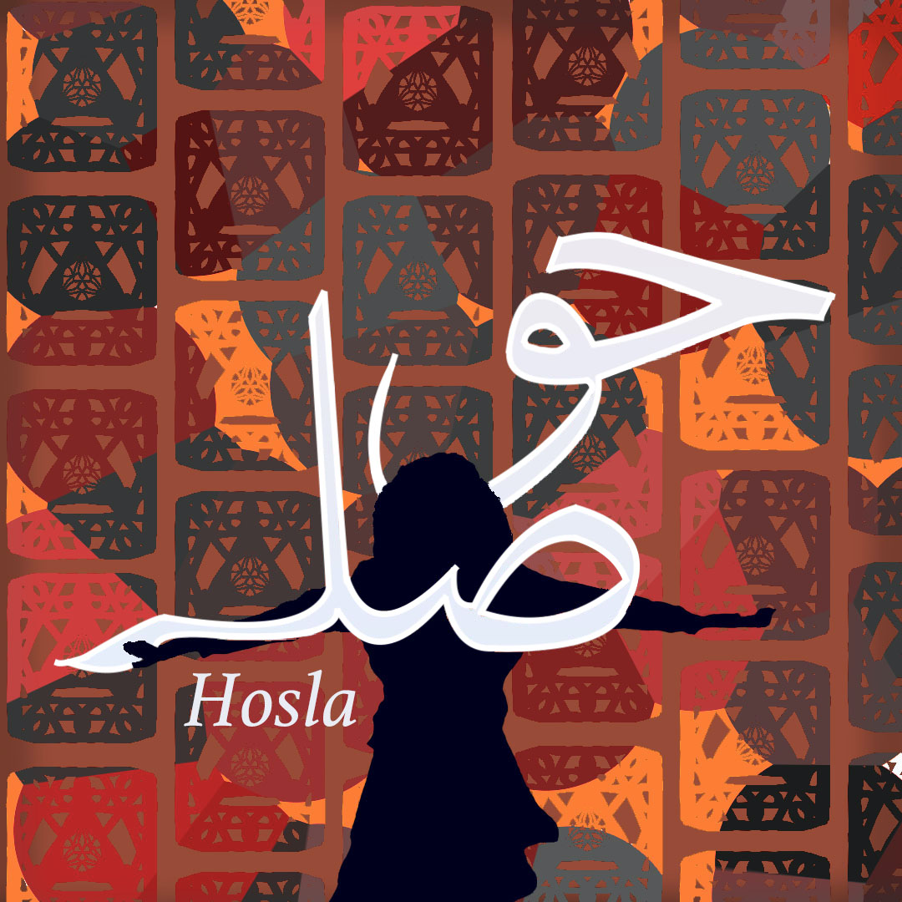

Iman Zuberi
As an undergraduate student at the University of California, Riverside, I am driven by a passion for design and a desire to make a difference in the world through my work. I believe that design is a powerful tool that can help to create meaningful and impactful experiences for users, and I am dedicated to using my skills and knowledge to help others.
I am focused on becoming a UX designer, and I am working hard to gain experience and build my skills in the field. I am constantly exploring new design techniques and methods, and I am always looking for opportunities to learn and grow. I understand the importance of staying up-to-date with the latest design trends and technologies, and I am always looking for ways to stay ahead of the curve.
One of my biggest goals is to secure an internship in the design field, where I can gain hands-on experience working with real-world clients and projects. I believe that an internship would provide me with the opportunity to develop my skills and make valuable connections in the industry. I am eager to work with experienced designers and learn from their expertise and guidance.
In addition to my passion for design, I am also dedicated to helping others and making a positive impact in the world. I believe that design can be used to create solutions to real-world problems and improve people's lives. Whether it's designing a new website for a non-profit organization or creating a mobile app that makes it easier for people to access important information, I am always looking for ways to use my skills and knowledge to make a difference.
In addition to my focus on UX design, I am also a talented graphic designer with a strong passion for creating visually appealing and impactful designs. I have honed my skills in graphic design through various personal projects, such as creating custom wedding invitations and t-shirt prints for friends and family.
I have a unique and creative style that sets me apart from other designers, and I am always striving to push the boundaries and come up with new and innovative designs. Whether it's creating a custom logo for a small business or designing a new print for a t-shirt, I am always up for a challenge and love putting my skills to the test.
I am particularly drawn to the wedding industry, and I enjoy creating custom wedding invitations and other stationery that help to set the tone and make a memorable impression on guests. I understand the importance of capturing the unique style and personality of each couple, and I work closely with clients to create designs that are truly reflective of their vision.
Through my work as a graphic designer, I am able to express my creativity and make a positive impact on others. I am driven by the satisfaction of seeing my designs come to life and the joy that they bring to others. Whether it's a wedding invitation that perfectly captures a couple's style, or a t-shirt print that makes someone smile, I am always grateful for the opportunity to make a difference through my work.
Experience
Graphic Design
• Cultivated positive relationships with 7-8 clients by maintaining an 80-100% satisfaction rate using Adobe Photoshop and Illustrator to generate images and layouts for over 20 projects.
• Demonstrated ability to take on various roles for numerous projects ranging from wedding card invitations, birthday cards, graphic design t-shirts/sweat-shirts, flyers, menus, posters, and illustrations.
• Pursued business development opportunities and fostered positive relationships with 5 clients by presenting mockups and collecting information for adjustments.
• Created marketing materials and designed original logos for restaurants and furniture shops, increasing sales by 10%.
Assistant Teacher
● Facilitated instruction of varying educational material to a class of 15 students with special needs, increasing their understanding by 35%.
● Provided hands-on assistance and resources to a total of 30 students, enabling positive academic progress & enhanced comfortability with subject material.
● Organized and led 3 events related to school objectives, displaying strong communication skills which reached 100 audience members each.
Key Chain Business
● Utilized CAD 3D software to develop, design, and create customizable keychains and executed promotional marketing strategies to create a brand identity.
● Conducted market research to understand customer behaviors, prospects, buying influences, and competitors, and increased sales by 50%.
● Developed and implemented business plans, staying within budget means managing customers and visual aesthetics for our brand: product packaging, retail displays, and creative copywriting.
Education
University of California Riverside
Portfolio






 
